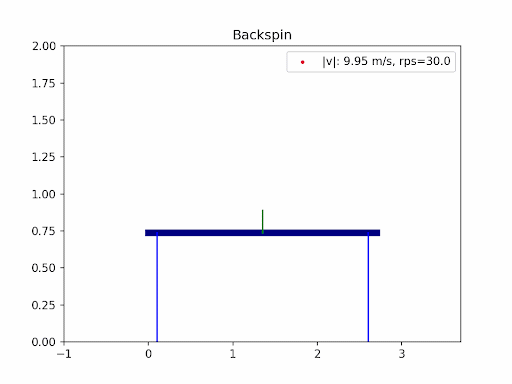
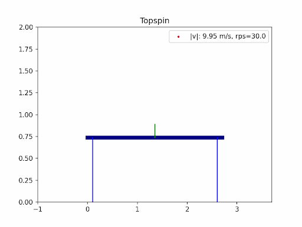

Table tennis aerodynamics is a project that brings together three of my passions: table tennis, physics, and coding. As a table tennis player for over 15 years, I’ve always been fascinated by the physics behind the game—especially the way spin transforms the ball’s flight. In this project, I combined my experience as a player with my love for science and programming to simulate and visualize the aerodynamics of table tennis serves.
The images below are simulation results generated using my own code. Each animation shows how different types of spin and initial conditions affect the ball’s trajectory.
Want to see the code or try it yourself? Check out the project on GitHub: danielahyano/table_tennis_aerodynamics
In table tennis, the ball’s flight is shaped by gravity, air resistance (drag), and the Magnus effect from spin. Professional players use a mix of backspin, topspin, and sidespin—especially on serves—to create unpredictable and fascinating trajectories. In this project, I explored the aerodynamics of table tennis serves by simulating ball trajectories under different spins and initial conditions.
The motion of a table tennis ball is governed by Newton’s second law: \[ \frac{d\vec{r}}{dt} = \vec{v} \\ \] \[ \frac{d\vec{v}}{dt} = \frac{1}{m}\vec{F}(\vec{v}) \] where \(\vec{F}(\vec{v})\) includes gravity, drag, and spin forces. The ball’s mass is 2.7 grams and its diameter is 40 mm [1].
where \(\rho\) is air density, \(A\) is cross-sectional area, and \(C_D\) is the drag coefficient.
For no spin:
where \(S_0 = -0.7R^3\) [2], \(\vec{\omega}\) is the spin vector, and \(R\) is the ball’s radius.
For high spin (\(S = R/v_0 > 0.05\) and \(v > 10.29\) m/s):
When the ball bounces, both linear and angular momentum are considered:
where \(I = \frac{2}{3}mR^2\) for a hollow sphere.
Assuming a perfectly elastic collision, momentum is conserved, allowing us to solve for post-bounce velocities and spins.To simulate the ball’s path, I used the Euler midpoint method to numerically integrate the equations of motion, accounting for all forces and the effects of spin and bounce.
 